HKPolyU - Seminar
< 04 AUG - District Energy Systems and Smart Grid >
The following notes are taken following the seminars by RISE (Research Institute for Smart Energy) from Hong Kong Politechnic University. RISE is a newly estabilished cross-disciplinary research planform for innovative and sustainable energy.
| INDEX | CONTENT |
|---|---|
| Speaker 01 | Overview of Smart Grid Research: Status Quo and Future Challenges |
| Speaker 02 | Integrated District Energy System towards Carbon-Neutral Cities |
| Speaker 03 | Power System Stability as Affected by RE Integration |
| Speaker 04 | Reliable Microinverter for PV Integrated Smart Grids |
- - - - - - - - - - - - - - - Speaker 01 - - - - - - - - - - - - - - -
[ B A C K ]
Overview of Smart Grid Research: Status Quo and Future Challenges
by XU Zhao
Power Grid Blockflow
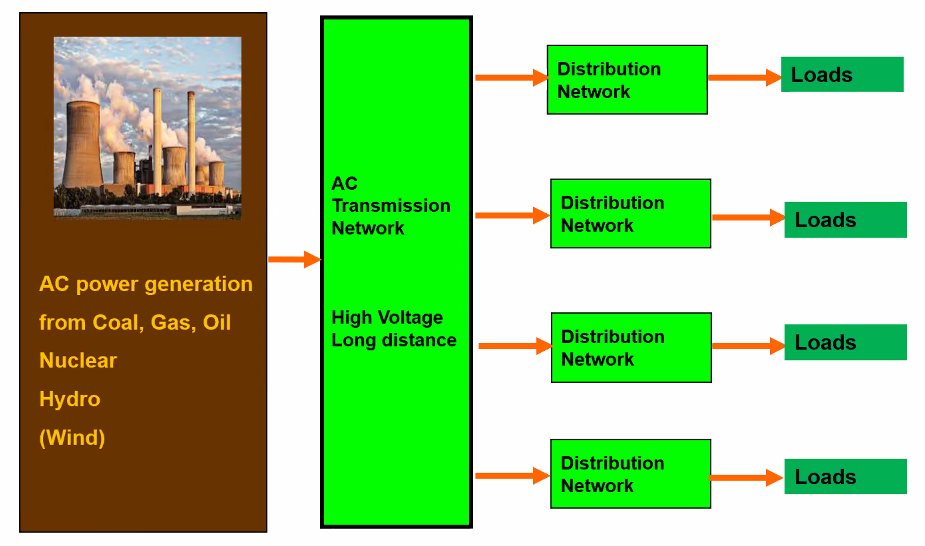
Scope of Power System Research
Power systems are complex dynamical systems and scientific research across multiple domains reinforces that such systems have ‘critical points’:
Power system analysis: modeling, planing, operation and control
Methodologies changings:
- Deterministic -> Probabilitistic -> stochastic
- Centralized -> Decentralized
- Monopoly -> Market competition
- Model based human centered -> Data driven AI
Production landscape: changes in Denmark

Challenges during transitions - RES
Technical challenges
Variability and uncertainty
- Frequency (>50.1 Hz vs <49.9 Hz)
- Power balance between demand and supply
Limited wind predictability
- Extreme wind events
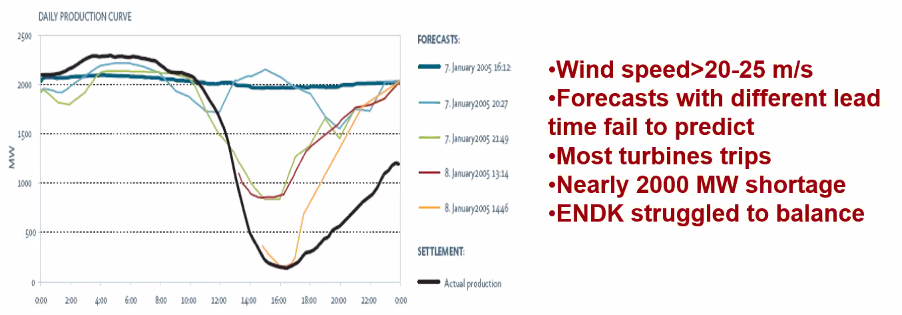
- Extreme wind events
Inverter-based generators (intro by Dr.Bu)
Emerging research areas
- AI
- Novel frameworks/architecture for system operation and control
- Integration of EV, storages and other demand resources
Granule-based Interval Forcasting
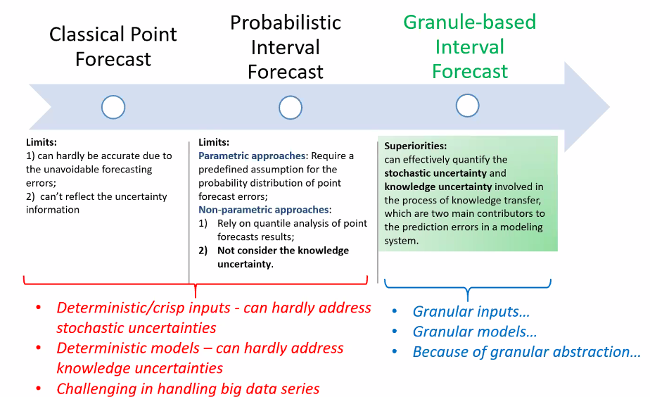

- - - - - - - - - - - - - - - Speaker 02 - - - - - - - - - - - - - - -
[ B A C K ]
Integrated District Energy System towards Carbon-Neutral Cities
by XIAO Fu
Basic Strategies
Due to the fact that EU or US housing is different from intensive cities like HongKong, the following strategies are introduced:
- Maximizing the use of RES and clean energy resources (eg. Green hydrogen energy)
- Minimizing energy demands of consumers
- Effectively coordinate multiple generations as well as supply and demand sides
- Energy Supply
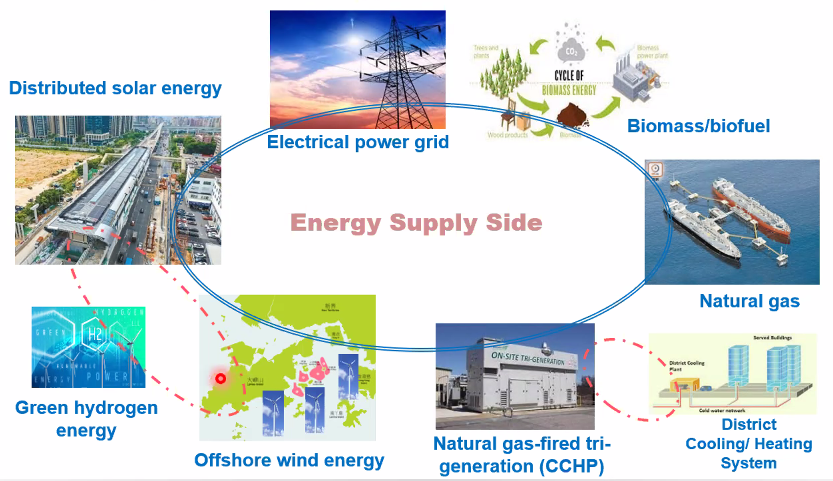
- Energy Storages
- Energy Demands (Responsive system)
- Smart Management Platform
- Game-theory based multi-obj optimization
- Integrated District Energy System
RISE’s Strategies
Phases from Planning to Design to Construction to Operation
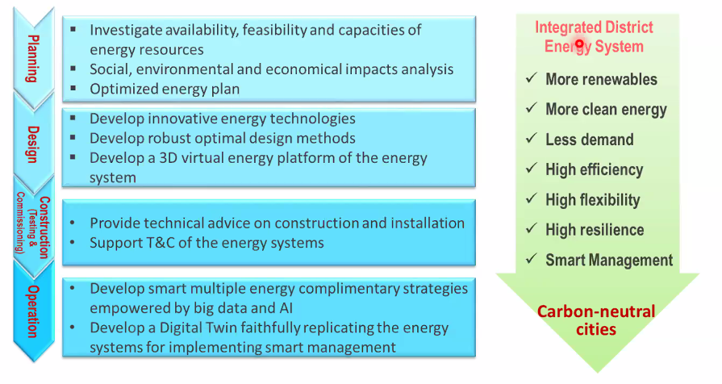
Cooperation - project SEM4Cities
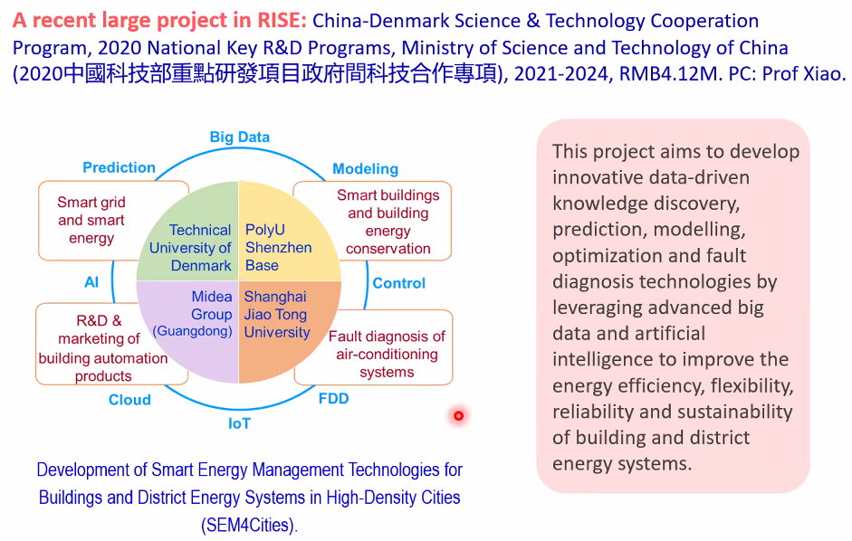
- - - - - - - - - - - - - - - Speaker 03 - - - - - - - - - - - - - - -
[ B A C K ]
Power System Stability as Affected by RE Integration
by BU Siqi
Definition of Stability in General
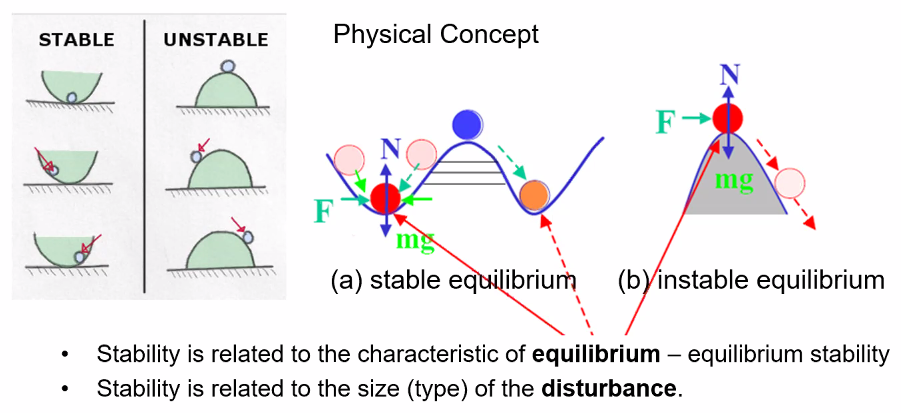
New challenges and Classification
- Variability
- How to tackle:
- Direct control and dispatch stategy
- Compensation stategy
- How to tackle:
- Inflexibility
- Less/no Inertia
- Conventional generation redundancy strategy
- …
Stability
To underline the high risk:
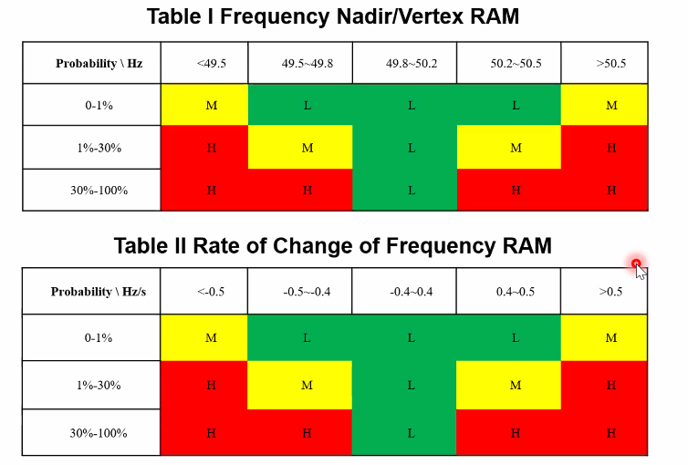
- - - - - - - - - - - - - - - Speaker 04 - - - - - - - - - - - - - - -
[ B A C K ]
Reliable Microinverter for PV Integrated Smart Grids
by WANG Minghao
PV Generation System
- Main configurations
a. Central inverter
b. String inverter
c. Microinverter (trending)pros: High efficiency High reliability cons: High costs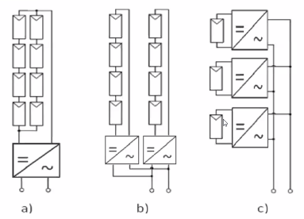
Reliability issue
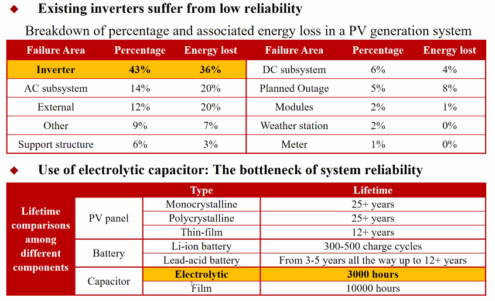
Solutions: Active Power Decoupling Tech
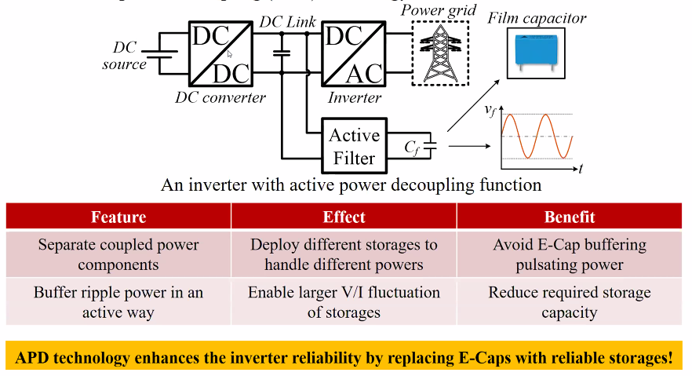